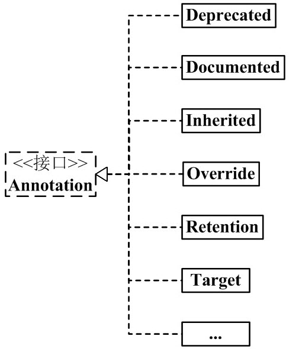

Las clases, métodos, variables, parámetros y paquetes en el lenguaje Java pueden ser anotados. A diferencia de Javadoc, las anotaciones de Java pueden obtener el contenido de la anotación mediante reflexión. Cuando el compilador genera el archivo de clase, las anotaciones pueden integrarse en el bytecode. La máquina virtual de Java puede conservar el contenido de las anotaciones y obtenerlo en tiempo de ejecución. Por supuesto, también admite anotaciones de Java personalizadas.
Hay muchos artículos en Internet sobre las anotaciones de Java, que resultan abrumadores. Las anotaciones de Java son en realidad muy simples, pero quienes las explican no las aclaran bien, lo que confunde aún más a los lectores.
He organizado las anotaciones según mi propio enfoque. La clave para entender las anotaciones es comprender su sintaxis y uso; he explicado estos contenidos en detalle. Después de entender la sintaxis y el uso de las anotaciones, al observar el diagrama de estructura de las anotaciones, es posible tener una comprensión más profunda. Basta de palabras superfluas; a continuación comenzaré a explicar las anotaciones. Si encuentra errores o deficiencias en el artículo, ¡espero que pueda señalarlos!
Anotaciones integradas
Java define un conjunto de anotaciones, en total 7; 3 están en java.lang y los 4 restantes están en java.lang.annotation.
Las anotaciones que actúan sobre el código son:
- @Override: comprueba si el método es un método de anulación (override). Si se descubre que su clase padre o la interfaz referenciada no contiene ese método, se produce un error de compilación.
- @Deprecated: marca métodos obsoletos. Si se utiliza ese método, se emite una advertencia de compilación.
- @SuppressWarnings: indica al compilador que ignore las advertencias declaradas en la anotación.
Las anotaciones que actúan sobre otras anotaciones (o meta-anotaciones) son:
- @Retention: indica cómo se conserva esta anotación, si solo en el código, si se incluye en el archivo de clase, o si se puede acceder a ella mediante reflexión en tiempo de ejecución.
- @Documented: marca si estas anotaciones se incluyen en la documentación del usuario.
- @Target: marca a qué tipo de miembro de Java debería aplicarse esta anotación.
- @Inherited: marca de qué clase de anotación se hereda esta anotación (por defecto, la anotación no se hereda de ninguna subclase).
A partir de Java 7, se agregaron adicionalmente 3 anotaciones:
- @SafeVarargs: compatible desde Java 7, ignora las advertencias generadas por llamadas a métodos o constructores cuyos parámetros sean variables de tipo genérico.
- @FunctionalInterface: compatible desde Java 8, identifica una función anónima o una interfaz funcional.
- @Repeatable: compatible desde Java 8, indica que una anotación puede usarse varias veces en la misma declaración.
1. Arquitectura de Annotation

De esto, podemos ver:
(01) Una anotación está asociada con una RetentionPolicy.
Se puede entender que: cada objeto Annotation tiene una propiedad RetentionPolicy única.(02) Una anotación está asociada con 1 a n ElementType.
Se puede entender que: cada objeto Annotation puede tener varias propiedades ElementType.
(03) Annotation tiene muchas clases de implementación, incluyendo: Deprecated, Documented, Inherited, Override, etc.
Cada clase de implementación de Annotation está "asociada con una RetentionPolicy" y "asociada con 1 a n ElementType".
A continuación, primero presentaré la mitad izquierda del diagrama de estructura (como se muestra a continuación), es decir, Annotation, RetentionPolicy y ElementType; luego daré ejemplos de las clases de implementación de Annotation.

2. Componentes de Annotation
En la composición de las anotaciones de Java, hay 3 clases principales muy importantes. Ellas son:
Annotation.java
public interface Annotation {
boolean equals(Object obj);
int hashCode();
String toString();
Class<? extends Annotation> annotationType();
}
ElementType.java
public enum ElementType {
TYPE, /* Declaración de clase, interfaz (incluidos los tipos de anotación) o enumeración */
FIELD, /* Declaración de campo (incluidas las constantes de enumeración) */
METHOD, /* Declaración de método */
PARAMETER, /* Declaración de parámetro */
CONSTRUCTOR, /* Declaración de constructor */
LOCAL_VARIABLE, /* Declaración de variable local */
ANNOTATION_TYPE, /* Declaración de tipo de anotación */
PACKAGE /* Declaración de paquete */
}
RetentionPolicy.java
public enum RetentionPolicy {
SOURCE, /* La información de Annotation existe solo durante el procesamiento del compilador; una vez que el compilador termina, esa información de Annotation ya no existe. */
CLASS, /* El compilador almacena la Annotation en el archivo .class correspondiente a la clase. Comportamiento predeterminado. */
RUNTIME /* El compilador almacena la Annotation en el archivo de clase y puede ser leída por la JVM. */
}
Explicación:
(01) Annotation es simplemente una interfaz.
"Cada Annotation" está asociada con "una RetentionPolicy" y con "1 a n ElementType". Se puede entender de manera sencilla que: cada objeto Annotation tiene una propiedad RetentionPolicy única; en cuanto a la propiedad ElementType, puede tener de 1 a n.
(02) ElementType es un tipo enumerado (Enum), que se utiliza para especificar el tipo de Annotation.
"Cada Annotation" está asociada con "1 a n ElementType". Cuando una Annotation se asocia con un ElementType, significa que la Annotation tiene un propósito determinado. Por ejemplo, si un objeto Annotation es de tipo METHOD, dicha Annotation solo puede usarse para modificar métodos.
(03) RetentionPolicy es un tipo enumerado (Enum), que se utiliza para especificar la política de Annotation. En términos sencillos, las anotaciones de diferentes tipos de RetentionPolicy tienen distintos ámbitos de aplicación.
"Cada Annotation" está asociada con "una RetentionPolicy".
- a) Si el tipo de Annotation es SOURCE, significa que la Annotation existe solo durante el procesamiento del compilador; una vez que el compilador termina, la Annotation ya no es útil. Por ejemplo, el marcador "@Override" es una Annotation. Cuando modifica un método, significa que ese método sobrescribe el método de la clase padre; además, se realiza una verificación sintáctica durante la compilación. Una vez que el compilador termina, "@Override" no tiene ningún efecto.
- b) Si el tipo de Annotation es CLASS, significa que el compilador almacena la Annotation en el archivo .class correspondiente a la clase; es el comportamiento predeterminado de Annotation.
- c) Si el tipo de Annotation es RUNTIME, significa que el compilador almacena la Annotation en el archivo de clase y puede ser leída por la JVM.
En este punto, solo hay que recordar que "cada Annotation" está asociada con "una RetentionPolicy" y con "1 a n ElementType". Después de estudiar el contenido posterior, al volver a revisar estos contenidos, será más fácil comprenderlos.
3. Annotations incorporadas en Java
Después de comprender la función de las 3 clases anteriores, a continuación podemos explicar la definición sintáctica de las clases de implementación de Annotation.
1) Definición general de Annotation
@Documented
@Target(ElementType.TYPE)
@Retention(RetentionPolicy.RUNTIME)
public @interface MyAnnotation1 {
}
Explicación:
El propósito de lo anterior es definir una anotación (Annotation), cuyo nombre es MyAnnotation1. Una vez definida MyAnnotation1, podemos usarla en el código mediante "@MyAnnotation1". Los demás elementos, @Documented, @Target, @Retention y @interface, se utilizan para modificar MyAnnotation1. A continuación, explicamos sus significados por separado:
(01) @interface
Al usar @interface para definir una anotación, significa que implementa la interfaz java.lang.annotation.Annotation, es decir, dicha anotación es una Annotation.
Al definir una Annotation, @interface es obligatorio.Nota: esto es diferente del método habitual de implementar interfaces con "implemented". Los detalles de implementación de la interfaz Annotation los realiza el compilador. Una vez que se define una anotación mediante @interface, dicha anotación no puede heredar otras anotaciones ni interfaces.
(02) @Documented
De forma predeterminada, las anotaciones de clases y métodos no aparecen en javadoc. Si se usa @Documented para modificar dicha anotación, significa que puede aparecer en javadoc.
Al definir una Annotation, @Documented es opcional; si no se define, la Annotation no aparecerá en javadoc.
(03) @Target(ElementType.TYPE)
Anteriormente dijimos que ElementType es el atributo de tipo de una Annotation. La función de @Target es especificar el atributo de tipo de la Annotation.
@Target(ElementType.TYPE) significa especificar que el tipo de la Annotation es ElementType.TYPE. Esto implica que MyAnnotation1 es una anotación que modifica "declaraciones de clases, interfaces (incluidos los tipos de anotación) o enumeraciones".
Al definir una Annotation, @Target es opcional. Si se incluye @Target, la Annotation solo puede usarse en los lugares que esta especifica; si no se incluye @Target, la Annotation puede usarse en cualquier lugar.
(04) @Retention(RetentionPolicy.RUNTIME)
Anteriormente dijimos que RetentionPolicy es el atributo de estrategia de una Annotation, y la función de @Retention es especificar el atributo de estrategia de la Annotation.
@Retention(RetentionPolicy.RUNTIME) significa especificar que la estrategia de la Annotation es RetentionPolicy.RUNTIME. Esto implica que el compilador conservará la información de la Annotation en el archivo .class y la máquina virtual podrá leerla.
Al definir una Annotation, @Retention es opcional. Si no se incluye @Retention, el valor predeterminado es RetentionPolicy.CLASS.
2) Annotations incorporadas en Java
Mediante el ejemplo anterior, podemos entender: @interface se usa para declarar una Annotation, @Documented se usa para indicar si la Annotation aparecerá en javadoc, @Target se usa para especificar el tipo de la Annotation y @Retention se usa para especificar la estrategia de la Annotation.
Después de entender esto, es fácil comprender las clases de implementación de las anotaciones incorporadas en Java, es decir, la mitad derecha del diagrama de arquitectura de las Annotations. Como se muestra a continuación:

Anotaciones de uso común en Java:
@Deprecated -- @Deprecated 所标注内容，不再被建议使用。 @Override -- @Override 只能标注方法，表示该方法覆盖父类中的方法。 @Documented -- @Documented 所标注内容，可以出现在javadoc中。 @Inherited -- @Inherited只能被用来标注“Annotation类型”，它所标注的Annotation具有继承性。 @Retention -- @Retention只能被用来标注“Annotation类型”，而且它被用来指定Annotation的RetentionPolicy属性。 @Target -- @Target只能被用来标注“Annotation类型”，而且它被用来指定Annotation的ElementType属性。 @SuppressWarnings -- @SuppressWarnings 所标注内容产生的警告，编译器会对这些警告保持静默。
Dado que "@Deprecated y @Override" son similares, y "@Documented, @Inherited, @Retention, @Target" son similares; a continuación, solo explicamos estas 3 anotaciones: @Deprecated, @Inherited y @SuppressWarnings.
2.1) @Deprecated
La definición de @Deprecated es la siguiente:
@Documented
@Retention(RetentionPolicy.RUNTIME)
public @interface Deprecated {
}
Explicación:
- (01) @interface -- se utiliza para modificar Deprecated, lo que significa que Deprecated implementa la interfaz java.lang.annotation.Annotation; es decir, Deprecated es una anotación. (02) @Documented -- su función es indicar que la anotación puede aparecer en javadoc.
- (03) @Retention(RetentionPolicy.RUNTIME) -- su función es especificar que la estrategia de Deprecated es RetentionPolicy.RUNTIME. Esto implica que el compilador conservará la información de Deprecated en el archivo .class y la máquina virtual podrá leerla.
- (04) El contenido marcado con @Deprecated ya no se recomienda usarlo.
Por ejemplo, si un método está marcado con @Deprecated, ya no se recomienda usarlo. Si un desarrollador intenta usar o sobrescribir un método marcado con @Deprecated, el compilador mostrará el mensaje de aviso correspondiente. Ejemplo:

DeprecatedTest.java
import java.util.Calendar;
public class DeprecatedTest {
// @Deprecated modifica getString1(), indica que es una función que se recomienda no usar
@Deprecated
private static void getString1(){
System.out.println("Deprecated Method");
}
private static void getString2(){
System.out.println("Normal Method");
}
// Date es la clase de fecha/hora. Java ya no recomienda usar esta clase
private static void testDate() {
Date date = new Date(113, 8, 25);
System.out.println(date.getYear());
}
// Calendar es la clase de fecha/hora. Java recomienda usar Calendar en lugar de Date para representar "fecha/hora"
private static void testCalendar() {
Calendar cal = Calendar.getInstance();
System.out.println(cal.get(Calendar.YEAR));
}
public static void main(String[] args) {
getString1();
getString2();
testDate();
testCalendar();
}
}
Explicación:
Lo anterior es una captura de pantalla en Eclipse, comparando "getString1() y getString2()" y "testDate() y testCalendar()" en la clase.
(01) getString1() está marcado con @Deprecated, lo que significa que se recomienda no usar getString1(); por lo tanto, tanto en la definición como en la llamada de getString1(), aparece una línea tachada. Esta línea es el tratamiento que Eclipse da a los métodos @Deprecated.
getString2() no está marcado con @Deprecated, por lo que se muestra normalmente.
(02) testDate() llama a los métodos relacionados de Date, y Java ya recomienda no usar Date para operaciones de fecha/hora. Por lo tanto, al llamar a la API de Date, se generan advertencias, los warnings en la figura.
testCalendar() llama a la API de Calendar para operar con fecha/hora. Java recomienda usar Calendar en lugar de Date. Por lo tanto, operar con Calendar no genera warning.
2.2) @Inherited
La definición de @Inherited es la siguiente:
@Documented
@Retention(RetentionPolicy.RUNTIME)
@Target(ElementType.ANNOTATION_TYPE)
public @interface Inherited {
}
Explicación:
- (01) @interface -- se utiliza para modificar Inherited, lo que significa que Inherited implementa la interfaz java.lang.annotation.Annotation; es decir, Inherited es una anotación.
- (02) @Documented -- su función es indicar que la anotación puede aparecer en javadoc.
- (03) @Retention(RetentionPolicy.RUNTIME) -- su función es especificar que la estrategia de Inherited es RetentionPolicy.RUNTIME. Esto implica que el compilador conservará la información de Inherited en el archivo .class y la máquina virtual podrá leerla.
- (04) @Target(ElementType.ANNOTATION_TYPE) -- su función es especificar que el tipo de Inherited es ANNOTATION_TYPE. Esto implica que @Inherited solo se puede usar para anotar "tipos de Annotation".
- (05) El significado de @Inherited es que la Annotation que marca tendrá herencia.
entonces Base "tiene la anotación MyAnnotation"; ahora, Sub hereda de Base, y dado que MyAnnotation es @Inherited (tiene herencia), Sub también "tiene la anotación MyAnnotation".
Ejemplo de uso de @Inherited:
InheritableSon.java
import java.lang.annotation.ElementType;
import java.lang.annotation.Retention;
import java.lang.annotation.RetentionPolicy;
import java.lang.annotation.Inherited;
/**
* Annotation personalizada.
*/
@Target(ElementType.TYPE)
@Retention(RetentionPolicy.RUNTIME)
@Inherited
@interface Inheritable
{
}
@Inheritable
class InheritableFather
{
public InheritableFather() {
// Si InheritableBase tiene la anotación Inheritable
System.out.println("InheritableFather:"+InheritableFather.class.isAnnotationPresent(Inheritable.class));
}
}
/**
* La clase InheritableSon solo hereda de InheritableFather,
*/
public class InheritableSon extends InheritableFather
{
public InheritableSon() {
super(); // Llamar al constructor de la clase padre
// Si la clase InheritableSon tiene la anotación Inheritable
System.out.println("InheritableSon:"+InheritableSon.class.isAnnotationPresent(Inheritable.class));
}
public static void main(String[] args)
{
InheritableSon is = new InheritableSon();
}
}
Resultado de la ejecución:
InheritableFather:true InheritableSon:true
Ahora, modificamos InheritableSon.java: comentamos la anotación "@Inherited" de Inheritable.
InheritableSon.java
import java.lang.annotation.ElementType;
import java.lang.annotation.Retention;
import java.lang.annotation.RetentionPolicy;
import java.lang.annotation.Inherited;
/**
* Anotación personalizada.
*/
@Target(ElementType.TYPE)
@Retention(RetentionPolicy.RUNTIME)
//@Inherited
@interface Inheritable
{
}
@Inheritable
class InheritableFather
{
public InheritableFather() {
// Si InheritableBase tiene la anotación Inheritable
System.out.println("InheritableFather:"+InheritableFather.class.isAnnotationPresent(Inheritable.class));
}
}
/**
* La clase InheritableSon solo hereda de InheritableFather,
*/
public class InheritableSon extends InheritableFather
{
public InheritableSon() {
super(); // Llamar al constructor de la clase padre
// Si la clase InheritableSon tiene la anotación Inheritable
System.out.println("InheritableSon:"+InheritableSon.class.isAnnotationPresent(Inheritable.class));
}
public static void main(String[] args)
{
InheritableSon is = new InheritableSon();
}
}
Resultado de ejecución:
InheritableFather:true InheritableSon:false
Comparando los dos resultados anteriores, descubrimos que: cuando la anotación Inheritable está marcada con @Inherited, tiene herencia. De lo contrario, no tiene herencia.
2.3) @SuppressWarnings
La definición de @SuppressWarnings es la siguiente:
@Target({TYPE, FIELD, METHOD, PARAMETER, CONSTRUCTOR, LOCAL_VARIABLE})
@Retention(RetentionPolicy.SOURCE)
public @interface SuppressWarnings {
String[] value();
}
Explicación:
(01) @interface -- se utiliza para modificar SuppressWarnings, lo que significa que SuppressWarnings implementa la interfaz java.lang.annotation.Annotation; es decir, SuppressWarnings es una anotación.
(02) @Retention(RetentionPolicy.SOURCE) -- su función es especificar que la política de SuppressWarnings es RetentionPolicy.SOURCE. Esto significa que la información de SuppressWarnings solo existe durante el procesamiento del compilador; después de que el compilador termina de procesarla, SuppressWarnings ya no tiene efecto.
(03) @Target({TYPE, FIELD, METHOD, PARAMETER, CONSTRUCTOR, LOCAL_VARIABLE}) -- su función es especificar que los tipos de SuppressWarnings incluyen TYPE, FIELD, METHOD, PARAMETER, CONSTRUCTOR, LOCAL_VARIABLE.
- TYPE significa que puede marcar "declaraciones de clase, interfaz (incluidos los tipos de anotación) o enumeración".
- FIELD significa que puede marcar "declaraciones de campo".
- METHOD significa que puede marcar "métodos".
- PARAMETER significa que puede marcar "parámetros".
- CONSTRUCTOR significa que puede marcar "constructores".
- LOCAL_VARIABLE significa que puede marcar "variables locales".
(04) String[] value(); significa que SuppressWarnings puede especificar parámetros.
(05) La función de SuppressWarnings es hacer que el compilador guarde silencio ante ciertas advertencias de "lo que marca". Por ejemplo, "@SuppressWarnings(value={"deprecation", "unchecked"})" indica guardar silencio sobre "la advertencia de que ya no se recomienda usar" y "la advertencia de conversión no verificada" en "lo que marca". El ejemplo es el siguiente:


SuppressWarningTest.java
public class SuppressWarningTest {
//@SuppressWarnings(value={"deprecation"})
public static void doSomething(){
Date date = new Date(113, 8, 26);
System.out.println(date);
}
public static void main(String[] args) {
doSomething();
}
}
Explicación:
(01) En la figura de la izquierda, no se usa @SuppressWarnings(value={"deprecation"}), y Date es una clase que Java ya no recomienda usar. Por lo tanto, al llamar a la API de Date, se genera una advertencia. En la figura de la derecha, se usa @SuppressWarnings(value={"deprecation"}). Por lo tanto, el compilador guarda silencio ante "la advertencia generada al llamar a la API de Date".
Suplemento: tabla de palabras clave de uso común de SuppressWarnings
deprecation -- 使用了不赞成使用的类或方法时的警告 unchecked -- 执行了未检查的转换时的警告，例如当使用集合时没有用泛型 (Generics) 来指定集合保存的类型。 fallthrough -- 当 Switch 程序块直接通往下一种情况而没有 Break 时的警告。 path -- 在类路径、源文件路径等中有不存在的路径时的警告。 serial -- 当在可序列化的类上缺少 serialVersionUID 定义时的警告。 finally -- 任何 finally 子句不能正常完成时的警告。 all -- 关于以上所有情况的警告。
4. Funciones de Annotation
Annotation es una clase auxiliar que se usa ampliamente en marcos de trabajo como Junit, Struts, Spring, etc.
Las funciones de Annotation que usamos a menudo en programación son:
1) Comprobación de compilación
Annotation tiene la función de "hacer que el compilador realice la verificación de compilación".
Por ejemplo, @SuppressWarnings, @Deprecated y @Override tienen funciones de verificación de compilación.
(01) En cuanto a @SuppressWarnings y @Deprecated, ya se han detallado en la "Parte 3". No se darán más ejemplos aquí.
(02) Si un método está marcado con @Override, significa que dicho método sobrescribe un método del mismo nombre en la clase padre. Si hay un método marcado con @Override, pero la clase padre no tiene un método del mismo nombre "marcado con @Override", el compilador reportará un error. El ejemplo es el siguiente:

OverrideTest.java
/**
* toString() está definido en java.lang.Object;
* Por lo tanto, marcarlo aquí con @Override es correcto.
*/
@Override
public String toString(){
return "Override toString";
}
/**
* getString() no está definido en ninguna clase padre de OverrideTest;
* Pero aquí se marca con @Override, por lo que se producirá un error de compilación.
*/
@Override
public String getString(){
return "get toString";
}
public static void main(String[] args) {
}
}
Lo anterior es una captura de pantalla del programa en Eclipse. De ella podemos ver que la función "getString()" reporta un error. Esto se debe a que "getString() está marcado con @Override, pero la función getString1() no está definida en ninguna clase padre de OverrideTest".
"Comentar el @Override que está sobre getString()" puede resolver el error.
2) Uso de Annotation en la reflexión
En las funciones de reflexión como Class, Method, Field, etc., hay muchas interfaces relacionadas con Annotation.
Esto también significa que podemos analizar y usar Annotation en la reflexión.
AnnotationTest.java
import java.lang.annotation.Target;
import java.lang.annotation.ElementType;
import java.lang.annotation.Retention;
import java.lang.annotation.RetentionPolicy;
import java.lang.annotation.Inherited;
import java.lang.reflect.Method;
/**
* Ejemplo de uso de Annotation en funciones de reflexión
*/
@Retention(RetentionPolicy.RUNTIME)
@interface MyAnnotation {
String[] value() default "unknown";
}
/**
* Clase Person. Usará la anotación MyAnnotation.
*/
class Person {
/**
* El método empty() está marcado a la vez por "@Deprecated" y "@MyAnnotation(value={"a","b"})".
* (01) @Deprecated significa que ya no se recomienda usar el método empty().
* (02) @MyAnnotation significa que el valor de MyAnnotation correspondiente al método empty() es el valor predeterminado "unknown".
*/
@MyAnnotation
@Deprecated
public void empty(){
System.out.println("\nempty");
}
/**
* sombody() está marcado por @MyAnnotation(value={"girl","boy"}),
* @MyAnnotation(value={"girl","boy"}) significa que el valor de MyAnnotation es {"girl","boy"}.
*/
@MyAnnotation(value={"girl","boy"})
public void somebody(String name, int age){
System.out.println("\nsomebody: "+name+", "+age);
}
}
public class AnnotationTest {
public static void main(String[] args) throws Exception {
// Crear una nueva Person
Person person = new Person();
// Obtener la instancia Class de Person
Class<Person> c = Person.class;
// Obtener la instancia Method del método somebody()
Method mSomebody = c.getMethod("somebody", new Class[]{String.class, int.class});
// Ejecutar el método
mSomebody.invoke(person, new Object[]{"lily", 18});
iteratorAnnotations(mSomebody);
// Obtener la instancia Method del método somebody()
Method mEmpty = c.getMethod("empty", new Class[]{});
// Ejecutar el método
mEmpty.invoke(person, new Object[]{});
iteratorAnnotations(mEmpty);
}
public static void iteratorAnnotations(Method method) {
// Determinar si el método somebody() contiene la anotación MyAnnotation
if(method.isAnnotationPresent(MyAnnotation.class)){
// Obtener la instancia de anotación MyAnnotation del método
MyAnnotation myAnnotation = method.getAnnotation(MyAnnotation.class);
// Obtener el valor de myAnnotation e imprimirlo
String[] values = myAnnotation.value();
for (String str:values)
System.out.printf(str+", ");
System.out.println();
}
// Obtener todas las anotaciones del método e imprimirlas
Annotation[] annotations = method.getAnnotations();
for(Annotation annotation : annotations){
System.out.println(annotation);
}
}
}
Resultado de ejecución:
somebody: lily, 18 girl, boy, @com.skywang.annotation.MyAnnotation(value=[girl, boy]) empty unknown, @com.skywang.annotation.MyAnnotation(value=[unknown]) @java.lang.Deprecated()
3) Generación de documentación de ayuda según Annotation
Al agregar la etiqueta @Documented a la anotación Annotation, dicha etiqueta de anotación puede aparecer en javadoc.
4) Ayuda para revisar el código
A través de @Override, @Deprecated, etc., podemos comprender fácilmente la estructura general del programa.
Además, también podemos implementar algunas funciones mediante anotaciones Annotation personalizadas.
Dirección original: https://www.cnblogs.com/skywang12345/p/3344137.html
Haz clic para compartir notas
<p style="font-size:14px;">¡Las notas deben ser una extensión del contenido de este artículo!</p><br> <p style="font-size:12px;"><a href="../tougao.html" target="_blank">Envío de artículos, haga clic aquí</a></p> <p style="font-size:14px;"><a href="./runoob-user-test-intro.html" target="_blank">Cómo obtener el código de invitación para el registro</a></p> <h3 class="text-muted"><i class="fa fa-info-circle" aria-hidden="true"></i> ¡Debe <a href=".." class="runoob-pop">iniciar sesión</a> antes de compartir notas!</h3> <p><a href="./runoob-user-test-intro.html" target="_blank">Cómo obtener el código de invitación para el registro</a></p>